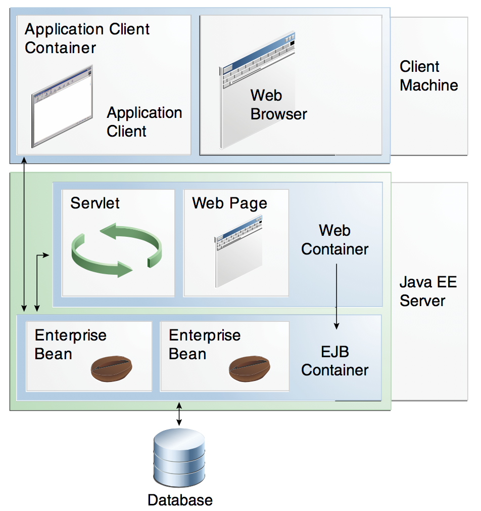

Created by <Academia de Código_>
The Java EE architecture makes enterprise applications easy to write because business logic is organized into reusable components
The Java EE server provides underlying services in the form of a container, avoiding handwriting many lines of code to handle transactions, state management, multithreading, resource pooling and other complex low-level details
Tomcat and Jetty are just servlet containers, they implement only the servlets and jsp specification
Glassfish and JBoss are full Java EE servers
Both JavaEE and Spring work on the same core APIs (Servlet, JPA, JMS, etc), the difference is what glues things together, Spring or an AppServer
Even though there are some different APIs for things like dependency injection (Spring DI vs CDI), REST (JAX-RS vs SpringMVC) etc., they look and behave pretty similar to each other
Spring is the most widely used web framework in the enterprise:
Consists of features organized into about 20 modules, grouped into the Core Container, AOP and Instrumentation, Messaging, Data Access/Integration, Web and Test:

Central part of the Spring Framework, upon which everything else is built on. Its core concepts are:
A Java application consists of a number of objects that collaborate with each other. For this collaboration to take place, objects have dependencies on each other.
Dependency injection is a software design pattern that implements Inversion of Control for resolving dependencies
What this means is that a given class or system is no longer responsible for instantiating their own dependencies, but moves the responsibility for locating and attaching dependency objects to another class or a DI tool
The Inversion of Control container manages object lifecycle and dependency injection

The most important part and the foundation of the Spring framework. Deals with configuration and lifecycle management of Spring Beans (POJOs)
The container is represented by the ApplicationContext interface and gets its instructions on what objects to instantiate, configure, and assemble by reading configuration metadata

Tells the container how to instantiate, configure, and assemble the objects that compose the application
The following forms of metadata can be used with the Spring container:
<import resource="file.xml"/>
<bean id="..." class="...">
</bean>
The container can load bean definitions from the classpath using ClassPathXmlApplicationContext
ApplicationContext context = new ClassPathXmlApplicationContext(
new String[] {"services.xml", "daos.xml"}
);
// retrieve configured instance
UserService userService = context.getBean("userService", UserService.class);
// use configured instance
List<String> userList = userService.getUsernameList();
This example uses getBean() to retrieve bean instances, which couples this class with the Spring API.
Ideally application code should have no dependency on Spring APIs at all, bean dependencies should be specified in the configuration metadata and the container will handle all the necessary wiring.
Managed by the IoC Container and created according to their configuration metadata:
Most Spring users prefer to work with JavaBeans with only a default (no-argument) constructor and appropriate setters and getters , but the Spring IoC container can manage virtually any class, even more exotic non-bean-style classes
// Bean definition
<bean id="hello" class="org.academiadecodigo.spring.HelloWorld"/>
// Bean instantiation using a constructor with no arguments
HelloWorld h = context.getBean("hello", HelloWorld.class);
h.sayHello();
Given the following code:
public class ClientService {
private static ClientService clientService = new ClientService();
private ClientService() {}
public static ClientService getInstance() {
return clientService;
}
}
The bean definition for ClientService is:
<bean id="clientService" class="examples.ClientService" factory-method="getInstance"/>
Given the following code:
public class DefaultServiceLocator {
private static ClientService clientService = new ClientServiceImpl();
public DefaultServiceLocator() {}
public ClientService createClientServiceInstance() {
return clientService;
}
}
The bean definition for ClientService is:
<bean id="serviceLocator" class="examples.DefaultServiceLocator"/>
<bean id="clientService" factory-bean="serviceLocator"
factory-method="createClientServiceInstance"/>
Even the simplest application has a few objects that work together to achieve the desired functionality. Dependency injection (DI) is a process whereby objects define their dependencies only through:
The container then injects those dependencies when it creates the bean using one of:
public class SimpleMovieLister {
// the SimpleMovieLister has a dependency on a MovieFinder
private MovieFinder movieFinder;
// a constructor so that the Spring container can inject a MovieFinder
public SimpleMovieLister(MovieFinder movieFinder) {
this.movieFinder = movieFinder;
}
// business logic that actually uses the injected MovieFinder
}
We could wire the above bean dependencies using:
<bean id="movieFinder" class="MovieFinder"/>
<bean id="simpleMovieLister" class="SimpleMovieLister">
<constructor-arg name="movieFinder" ref="movieFinder"/>
</bean>
public class SimpleMovieLister {
// the SimpleMovieLister has a dependency on the MovieFinder
private MovieFinder movieFinder;
// a setter method so that the Spring container can inject a MovieFinder
public void setMovieFinder(MovieFinder movieFinder) {
this.movieFinder = movieFinder;
}
// business logic that actually uses the injected MovieFinder
}
We could wire the above bean dependencies using:
<bean id="movieFinder" class="MovieFinder"/>
<bean id="simpleMovieLister" class="SimpleMovieLister">
<property name="movieFinder" ref="movieFinder"/>
</bean>
Since you can mix constructor-based and setter-based DI, it is a good rule of thumb to use constructors for mandatory dependencies and setter methods for optional dependencies
Besides dependent objects, Spring can also inject configuration properties using the value attribute of the property element
<property name="driverClass" value="com.mysql.cj.jdbc.Driver" />
<property name="jdbcUrl" value="jdbc:mysql://localhost:3306/bootcamp" />
<property name="user" value="root" />
<property name="password" value="root" />
<property name="maxPoolSize" value="50" />
<property name="minPoolSize" value="10" />
<property name="maxStatements" value="100" />
<property name="testConnectionOnCheckout" value="true" />
Values are defined as string representations, Spring will convert to the actual type of the property or argument
Besides references and values, Spring can also inject collection dependencies using the following elements:
| Tag | Inner Tag | Java Type | Specification |
|---|---|---|---|
| <list> | <value> | java.util.List<E> | Allows duplicate entries |
| <set> | <value> | java.util.Set<E> | Does not allow duplicate entries |
| <map> | <entry> | java.util.Map<K,V> | Key-Value pair of any object type |
| <props> | <prop> | java.util.Properties | Key-Value pair of type String |
public class Person {
private Map<String, Float> accounts;
public void setAccounts(Map<String, Float> accounts) {
this.accounts = accounts;
}
}
Spring Beans have a scope property that defines how many instances of the bean can Spring instantiate
For now, we will use two different bean scopes:
<bean id="accountService" class="com.foo.DefaultAccountService"/>
<bean id="accountService" class="com.foo.DefaultAccountService" scope="singleton"/>
<bean id="accountService" class="com.foo.DefaultAccountService" scope="prototype"/>
As a rule of thumb, use the prototype scope for all stateful beans and the singleton scope for stateless beans
By default, Spring container eagerly creates and configures all singleton beans as part of the initialization process
This default behaviour discovers errors in the configuration or environment immediately, as opposed to hours or even days later
When this behavior is not desirable, pre-instantiation of a singleton bean can be prevented by marking the bean definition as lazy-initialized
<bean id="lazy" class="ExpensiveToCreateBean" lazy-init="true"/>
<bean id="not.lazy" class="SimpleBean"/>
Add the following dependencies to your pom.
<dependency>
<groupId>org.springframework</groupId>
<artifactId>spring-context</artifactId>
<version>4.3.11.RELEASE</version>
</dependency>
<dependency>
<groupId>org.springframework</groupId>
<artifactId>spring-orm</artifactId>
<version>4.3.11.RELEASE</version>
</dependency>
<dependency>
<groupId>org.hibernate</groupId>
<artifactId>hibernate-c3p0</artifactId>
<version>5.3.6.Final</version>
</dependency>
<bean class="org.springframework.orm.jpa.support.PersistenceAnnotationBeanPostProcessor"/>
<bean id="dataSource" class="com.mchange.v2.c3p0.ComboPooledDataSource" destroy-method="close">
<property name="driverClass" value="com.mysql.cj.jdbc.Driver"/>
<property name="jdbcUrl" value="jdbc:mysql://localhost:3306/ac"/>
<property name="user" value="root"/>
<property name="minPoolSize" value="1"/>
<property name="maxPoolSize" value="10"/>
<property name="acquireIncrement" value="1"/>
<property name="maxStatements" value="0"/>
<property name="idleConnectionTestPeriod" value="300"/>
<property name="loginTimeout" value="7200"/>
</bean>
<bean id="emFactory" class="org.springframework.orm.jpa.LocalContainerEntityManagerFactoryBean">
<property name="dataSource" ref="dataSource"/>
<property name="packagesToScan" value="org.academiadecodigo.bootcamp.model"/>
<property name="jpaVendorAdapter">
<bean class="org.springframework.orm.jpa.vendor.HibernateJpaVendorAdapter"/>
</property>
<property name="jpaProperties">
<map>
<entry key="hibernate.dialect" value="org.hibernate.dialect.MySQL8Dialect"/>
<entry key="hibernate.show_sql" value="true" />
<entry key="hibernate.hbm2ddl.auto" value="create"/>
</map>
</property>
</bean>
An EntityManagerFactory can now be injected in the application using the @PersistenceUnit annotation

Let's examine the withdraw method for a banking application

An aspect is the cross-cutting functionality that will be modularized in AOP, such as logging, validation, caching, security, transactions, monitoring, error handling, etc.

Weaving is the process of applying aspects to a target object to create a new, proxied object
Weaving can be done in different ways:
For more powerful AOP features, Spring supports AspectJ
public class HijackBefore implements MethodBeforeAdvice {
@Override
public void before(Method method, Object[] args, Object target) throws Throwable {
System.out.println("Advised method will execute");
}
}
public class HijackAfter implements AfterReturningAdvice {
@Override
public void afterReturning(Object returnValue, Method method, Object[] args, Object target) throws Throwable {
System.out.println("Advised method has executed");
}
}
<bean id="target" class="AdvisedBean"/>
<bean id="before" class="aop.HijackBefore"/>
<bean id="after" class="aop.HijackAfter"/>
<property name="target" ref="target"/>
before
after
Provides a consistent programming model across different transaction APIs such as Java Transaction API (JTA), JDBC, Hibernate, Java Persistence API (JPA), and Java Data Objects (JDO)
Create a Spring Hibernate Transaction Manager Bean
<property name="entityManagerFactory" ref="emFactory"/>
Enable Spring AOP Transaction Management
<tx:annotation-driven transaction-manager="transactionManager"/>
public class UserServiceImpl implements UserService {
// Other user service methods
@Transactional
@Override
public void addUser(User user) {
if (userDao.findByName(user.getUsername()) == null) {
userDao.save(user);
}
}
}
If all methods require transactional behaviour, the whole class can be annotated with @Transactional